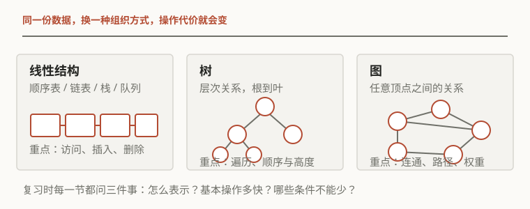
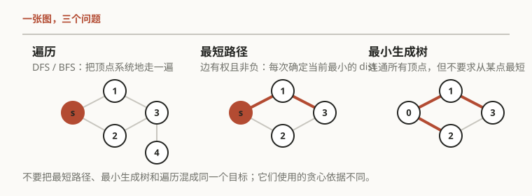

Study note / 2026-09-14
数据结构与算法
从抽象数据类型、表示方式和基本操作出发，整理复杂度、线性结构、树、图、查找与排序。
范围
课程资料的章节顺序会有差异，涉及的基本结构和算法大致相同。下面按线性结构、树、图、查找与排序的顺序整理，并单列并查集。
| 部分 | 本页整理的内容 |
|---|---|
| 基础 | ADT、数组与链式表示、时间和空间复杂度 |
| 线性结构 | 线性表、栈、队列和它们的典型应用 |
| 树 | 二叉树、遍历、BST、AVL、堆与优先队列 |
| 图 | 表示、DFS/BFS、拓扑排序、最短路、MST、网络流 |
| 查找与排序 | 折半查找、散列表、比较排序和基数排序 |
| 并查集 | 等价类、路径压缩、按大小合并和 Kruskal |

1. 抽象数据类型与复杂度
抽象数据类型和表示
抽象数据类型（ADT）只规定数据应该支持什么操作，以及操作满足什么性质；它不规定数据一定放在数组还是链表里。例如 List ADT 可以有查长度、按位置取值、插入、删除和查找等操作，具体实现再决定用连续内存还是节点链接。
选择表示方式时，需要同时比较常用操作的时间、空间和实现复杂度。接口相同，操作代价可能完全不同。
渐近记号和计数
对非负函数，\(f(n)=O(g(n))\) 表示存在常数 \(C,n_0\)，使 \(0\le f(n)\le Cg(n)\)（\(n\ge n_0\)）；\(\Theta(g(n))\) 还要求有同阶的下界，\(\Omega(g(n))\) 只保留下界。大 \(O\) 讨论的是规模变大后的增长速度，不负责描述小规模时的常数差异。
| 代码结构 | 估计方法 |
|---|---|
| 顺序语句 | 复杂度相加，保留增长最快的一项 |
| 单层循环 | 一次循环的代价乘以循环次数 |
| 嵌套循环 | 按各层实际迭代范围相乘；不规则范围要单独求和 |
| if/else | 最坏情况取分支中的较大者 |
| 递归 | 写出递推式，再用展开、递归树或主定理求阶 |
空间复杂度需要说明是否包含输入本身。递归调用栈、临时数组、哈希桶和堆中的备用空间，属于辅助空间。
最大子列和：复杂度的比较
给定数组 \(a_1,\ldots,a_n\)，求连续子列和的最大值。枚举左右端点再逐项求和是 \(O(n^3)\)；预先累加前缀和后，区间和可以 \(O(1)\) 得到，整体降为 \(O(n^2)\)。分治法按中点拆开，答案是左半、右半或跨过中点的最大和，得到 \(O(n\log n)\)。
线性算法只保留“以当前位置结尾的最佳子列”。令 \(b_i\) 是以 \(a_i\) 结尾的最大和，则
当 \(b_{i-1}<0\) 时，从当前位置重新开始不会损失最优解。由此只需一次扫描，时间为 \(O(n)\)、额外空间为 \(O(1)\)；若要输出区间端点，再保存当前起点和最佳终点。
2. 线性表、栈和队列
顺序表和链表
顺序表把元素放在连续空间里。下标访问是 \(O(1)\)，但在中间插入或删除时，后面的元素需要移动，通常是 \(O(n)\)。动态数组扩容时会偶尔付出 \(O(n)\) 的搬移代价，不过按一系列操作平均，尾部追加仍可做到摊销 \(O(1)\)。
单链表用节点和 next 指针表达顺序；已知待操作节点的前驱时，插入或删除只改常数条链接，是 \(O(1)\)，但按下标访问和查找第 \(k\) 个元素要从头走，通常是 \(O(n)\)。双向链表多保存一个 prev 指针，方便反向移动和删除已知节点，但空间和维护成本更高。
| 操作 | 顺序表 | 单链表 | 备注 |
|---|---|---|---|
| 按下标访问 | \(O(1)\) | \(O(n)\) | 链表没有随机访问 |
| 已知位置插入 | \(O(n)\) | \(O(1)\) | 链表要先找到前驱 |
| 按关键字查找 | \(O(n)\) | \(O(n)\) | 都可以提前结束 |
| 连续存储 | 是 | 否 | 影响缓存局部性和额外指针空间 |
链表操作需要单独处理空表、头节点、尾节点和删除最后一个节点等情况。哨兵头节点可以减少头部操作的分支。
栈
栈是 LIFO（后进先出）结构，Push 和 Pop 都在同一端进行。数组栈要维护 top，链栈把栈顶放在链表头部；两种实现的基本操作都可以做到 \(O(1)\)。空栈 Pop 是下溢，定长数组满时 Push 是上溢，接口应当明确返回错误还是拒绝操作。
栈常用于括号匹配、函数调用、递归回溯和表达式求值。把中缀表达式转成后缀表达式时，操作数直接输出，运算符按优先级暂存；扫描后缀表达式时遇到操作数入栈，遇到运算符弹出所需操作数，再把结果压回。
队列和循环队列
队列是 FIFO（先进先出）结构，Enqueue 在队尾，Dequeue 在队头。链队列分别维护 front 和 rear；数组实现要把下标看成模 \(N\) 的循环，否则出队后前面的空位无法复用。
循环队列可以用一个 count 区分空和满，也可以保留一个空槽：此时空队列满足 front=rear，满队列满足 \(\operatorname{next}(\text{rear})=\text{front}\)。两种约定需要分别实现。
层次遍历、BFS、打印任务和生产者–消费者模型都可以用队列表示。需要在两端插入和删除时，使用 deque。
3. 树、二叉树与搜索树
树的基本量
树由节点和边组成，有一个根，每个非根节点恰有一个父节点。含 \(N\) 个节点的树有 \(N-1\) 条边。节点的度是它拥有的孩子数，节点深度是根到它的路径长度；树高是所有节点深度的最大值，叶节点高度取 \(0\)，空树的高度约定常取 \(-1\)。
这些约定需要在题目开始时统一。比如递归求高度常写成 \(h(T)=1+\max(h(T_L),h(T_R))\)，若空树取 \(-1\)，单节点树的高度就是 \(0\)。
二叉树的性质和表示
二叉树的每个节点最多有两个孩子。根为第 \(0\) 层时，第 \(i\) 层最多有 \(2^i\) 个节点；高度为 \(h\) 时最多有 \(2^{h+1}-1\) 个节点。对任意非空二叉树，设 \(n_j\) 为度为 \(j\) 的节点数，则
完全二叉树的上层全满，最后一层从左到右连续放置，适合用数组表示。若下标从 \(0\) 开始，节点 \(i\) 的孩子是 \(2i+1,2i+2\)，父节点是 \(\lfloor(i-1)/2\rfloor\)；若下标从 \(1\) 开始，则孩子为 \(2i,2i+1\)，父节点为 \(\lfloor i/2\rfloor\)。堆使用了这组下标关系。
一般二叉树使用链式节点表示，每个节点保存 left 和 right。普通树也可以用“左孩子–右兄弟”形式表示为二叉树。
遍历
| 遍历 | 访问顺序 | 常见用途 |
|---|---|---|
| 先序 | 根、左、右 | 复制树、输出前缀形式 |
| 中序 | 左、根、右 | BST 中按关键字递增输出 |
| 后序 | 左、右、根 | 释放节点、计算子树信息 |
| 层序 | 按深度从小到大 | 队列实现、按层处理 |
递归遍历的每个节点只访问常数次，时间是 \(O(n)\)。非递归先序和中序用栈模拟递归；层序遍历用队列。带有空指针标记的先序序列可以唯一确定一棵二叉树；只有先序或只有中序通常不能唯一确定。
二叉搜索树和 AVL
BST 的不变量是：左子树关键字小于（或按题目规定不大于）根，右子树关键字大于根，左右子树仍满足同样条件。查找、找最小值和找最大值都沿一条根到叶的路径进行，时间为 \(O(h)\)，其中 \(h\) 是树高；树接近平衡时是 \(O(\log n)\)，退化成链时是 \(O(n)\)。
插入就是查找失败后把新节点放到那个空链接处。删除分三种情况：叶节点直接删；只有一个孩子时由孩子顶上；有两个孩子时用右子树最小节点（或左子树最大节点）替换，再删除那个替代节点。最后一种情况仍然只沿一条路径处理。
AVL 树对每个节点维护平衡因子 \(BF=h_L-h_R\)，要求 \(BF\in\{-1,0,1\}\)。插入或删除后从失衡节点向上检查，通过一次或两次旋转恢复平衡：LL 用右旋，RR 用左旋，LR 先左旋孩子再右旋，RL 先右旋孩子再左旋。AVL 高度为 \(O(\log n)\)，所以查找、插入和删除都保持对数级上界。
线索二叉树把原本为空的指针改成指向前驱或后继的线索，可以减少遍历时对栈的依赖；它改变的是遍历方式，不会自动改变 BST 的排序性质。
4. 堆和优先队列
堆的两个条件
二叉堆是一棵完全二叉树，同时满足堆序。最小堆要求父节点不大于孩子，根是全局最小值；最大堆相反。堆序只约束父子关系，不保证数组整体有序，也不能像 BST 那样按关键字搜索任意元素。
优先队列只要求访问最高优先级元素、插入和删除它。用堆实现时，查看根是 \(O(1)\)，插入和 DeleteMin/DeleteMax 都是 \(O(\log n)\)。
上滤、下滤和建堆
插入先把新元素放到数组末尾，再和父节点比较；违反堆序时不断上移，这叫上滤（percolate up）。删除根后把最后一个元素放到根，再和较小（或较大）的孩子交换，这叫下滤（percolate down）。每次最多移动树高层。
从 \(n\) 个无序元素建堆时，对所有非叶节点从最后一个父节点向前做下滤，称为 Floyd 建堆，整体时间为 \(O(n)\)。其线性复杂度来自节点高度的总和：底层节点数量多，但可下滤的高度很小。
堆排序先建最大堆，再反复把根与末尾交换并缩小堆的范围，时间 \(O(n\log n)\)、辅助空间 \(O(1)\)，但通常不稳定。需要维护前 \(k\) 个元素时，可以保留一个大小为 \(k\) 的小型堆，避免把所有候选都完整排序。
5. 并查集
等价类与表示
并查集维护一组互不相交的集合，典型操作是 Find(x)（找到代表元）和 Union(x,y)（合并两个集合）。它适用于动态连通性、等价类划分和 Kruskal 最小生成树。
最常见的表示是父节点数组。根节点不再指向父节点，可以用负数表示根，并把绝对值记成集合大小；非根节点保存父节点下标。这样一个数组同时保存了森林结构和集合规模。
路径压缩和按大小合并
普通 Find 沿父指针走到根。路径压缩会在返回时把沿途节点直接接到根上：
Union 时把小树接到大树上，或按秩（近似高度）合并，避免树高无故增加。两种优化一起使用时，\(m\) 次操作的总时间为 \(O(m\,\alpha(n))\)，其中 \(\alpha\) 是增长极慢的反 Ackermann 函数；在实际规模下可以看作接近常数。
并查集主要回答“是否属于同一集合”和合并集合，不保存带方向或带权的路径信息；需要这些信息时，应使用图或其他结构。
6. 图

基本概念和表示
图 \(G=(V,E)\) 由顶点和边组成。无向边没有方向；有向边从一个顶点指向另一个顶点。路径是按边连续经过的顶点序列，简单路径不重复顶点；从一个顶点沿有向边可以回到自身时形成有向环。无向图的连通分量是极大的连通子图；有向图还要区分强连通和弱连通。
无向图中顶点度数等于相连边数，所有顶点度数之和为 \(2|E|\)；有向图中分别有入度和出度，入度总和与出度总和都等于 \(|E|\)。这些计数关系常用于判断图的表示和算法复杂度。
| 表示 | 空间 | 查一条边 | 遍历邻接点 | 适合 |
|---|---|---|---|---|
| 邻接矩阵 | \(O(|V|^2)\) | \(O(1)\) | \(O(|V|)\) | 稠密图、需要频繁查边 |
| 邻接表 | \(O(|V|+|E|)\) | 取决于度数 | \(O(\deg(v))\) | 稀疏图、遍历和搜索 |
有向图的逆邻接表组织每个顶点的入边；需要同时查入边和出边时，可以维护两套表。邻接矩阵下扫描邻接点需要 \(O(|V|)\)，邻接表下只需扫描实际存在的边。
DFS、BFS 和连通性
DFS 沿一条路走到底，回退时继续；递归版本隐含使用调用栈，非递归版本显式使用栈。BFS 按距离从近到远扩展，使用队列。两者都把每个顶点和每条边处理常数次，邻接表下时间为 \(O(|V|+|E|)\)。
BFS 第一次到达顶点 \(v\) 时，层数就是从源点出发的无权最短距离 \(dist[v]\)。保存 parent 可以沿父指针还原路径。DFS 可用于找环、做拓扑排序、求关节点和桥；这些任务还需要记录进入和离开状态。
BFS(s):
dist[s] = 0; queue.push(s)
while queue not empty:
v = queue.pop()
for w in neighbors(v):
if w is unseen:
dist[w] = dist[v] + 1
parent[w] = v
queue.push(w)拓扑排序和关键路径
拓扑序是有向无环图（DAG）中满足“边 \(u\to v\) 让 \(u\) 出现在 \(v\) 之前”的顶点序列。它可能不唯一；有向图有环时不存在拓扑序。
Kahn 算法反复取入度为 \(0\) 的顶点放入队列，并删除它发出的边。若最终输出的顶点数少于 \(|V|\)，剩下的部分含环。也可以用 DFS：进入顶点标记为灰色，遇到灰色邻居就说明存在回边；离开时标记为黑色，按离开顺序逆序输出。
把任务看成带持续时间的 DAG 后，可以沿拓扑序计算最早开始或完成时间；决定总工期的最长路径称为关键路径。这里的“最长”并不和一般图上的最长简单路径混为一谈，前者依赖 DAG 的拓扑顺序，后者通常是困难问题。
最短路径
| 问题条件 | 算法 | 典型复杂度 | 条件 |
|---|---|---|---|
| 无权图 | BFS | \(O(|V|+|E|)\) | 每条边代价相同 |
| DAG | 拓扑序松弛 | \(O(|V|+|E|)\) | 边权可以为负，但不能有环 |
| 边权非负 | Dijkstra | 堆实现约 \(O((|V|+|E|)\log|V|)\) | 一旦确定的 dist 不能再被负边改小 |
| 允许负边 | Bellman–Ford | \(O(|V||E|)\) | 可检测从源点可达的负环 |
| 所有点对 | Floyd–Warshall | \(O(|V|^3)\) | 用中间点集合逐步扩展 |
Dijkstra 的核心是每次选取未确定顶点中当前 \(dist\) 最小者，再松弛其出边：
“当前最小就永久确定”依赖非负边权；有负边时不能直接使用 Dijkstra。无路可达的距离保持为 \(\infty\)，实现时需要避免与普通整数直接相加。
最小生成树
连通无向加权图的最小生成树（MST）要连接全部顶点、没有环，并使边权总和最小。它不要求从某个源点到其他点的路径最短，所以和最短路径树是不同对象。
Prim 从一个顶点开始，每次选跨过当前树与外部顶点的最小边；Kruskal 把边按权从小到大排序，只加入不会形成环的边。Kruskal 用并查集判断两个端点是否已连通，排序后通常为 \(O(|E|\log|E|)\)。两者都由 cut property 保证：跨过一个割的最轻边可以安全地加入某棵 MST。
网络流
网络流给每条有向边一个容量，要求除源点和汇点外满足流量守恒。增广路算法在残量网络中寻找 \(s\) 到 \(t\) 的路径，取路径上的瓶颈容量 \(\Delta\)，沿正向边减去 \(\Delta\)，沿反向边加上 \(\Delta\)。反向边允许撤销早先不理想的选择。
当残量网络中再也找不到增广路时，当前流达到最大值；最大流–最小割定理说明最大流值等于某个割的容量。用 BFS 找增广路的 Edmonds–Karp 算法复杂度为 \(O(|V||E|^2)\)。
关节点、桥和 low-link
对无向图，DFS 过程中记 \(dfn[v]\) 为顶点的发现时间，\(low[v]\) 为从 \(v\) 的 DFS 子树出发，经过至多一条返祖边能到达的最早发现时间。对 DFS 树边 \(v\to u\)，常用递推是
非根节点 \(v\) 在存在孩子 \(u\) 且 \(low[u]\ge dfn[v]\) 时是关节点；若 \(low[u]>dfn[v]\)，树边 \((v,u)\) 是桥。DFS 根有至少两个 DFS 子树时才是关节点。等号的差别要记清：关节点允许孩子通过返祖边回到自己，桥则不允许。
7. 查找与散列表
顺序查找和折半查找
无序表只能顺序比较，最坏时间为 \(O(n)\)。有序数组可以折半查找：每次比较中点，将候选区间缩小一半，最坏时间为 \(O(\log n)\)，但插入和删除仍需移动元素。折半查找的循环不变量是：目标若存在，始终位于当前闭区间 \([L,R]\) 内。
分块查找把数据分成若干有序块，先查块索引，再在块内顺序查找。BST 把有序关系组织成树，性能取决于树高；只有在树高为对数级时，查找才是对数时间。
散列表和冲突
散列表用 \(h(k)\) 把关键字映到桶下标，目标是平均 \(O(1)\) 的查找、插入和删除。负载因子记为 \(\alpha=n/m\)，其中 \(n\) 是元素数、\(m\) 是桶数；\(\alpha\) 过大时冲突增多，查找性能会明显下降。
| 方法 | 冲突处理 | 需要注意 |
|---|---|---|
| 链地址法 | 每个桶挂一个链表或动态容器 | 负载因子可以超过 1，节点有额外指针空间 |
| 线性探测 | \(h(k),h(k)+1,\ldots\) | 会产生 primary clustering |
| 二次探测 | 按平方增量跳跃 | 表长和探测序列可能使槽位覆盖不全 |
| 双重散列 | 步长由第二个散列函数决定 | 步长应与表长互质 |
开放地址法删除元素不能简单清空槽位，否则会截断后续探测链；通常使用墓碑标记。装载率达到阈值后重新选择更大的表并 rehash 全部元素。扩容会带来一次 \(O(n)\) 的重建，但按序列摊销仍可保持较低的平均代价。
KMP 字符串匹配
朴素匹配在失配后把模式串向右移一格，最坏 \(O(nm)\)。KMP 预处理模式串的前缀函数 \(\pi[i]\)：它是子串 \(p[0..i]\) 的最长真前缀长度，且同时也是后缀。失配时把模式位置退到 \(\pi[j-1]\)，主串指针不回退。
for i = 1 .. m-1:
j = pi[i-1]
while j > 0 and p[i] != p[j]:
j = pi[j-1]
if p[i] == p[j]:
j = j + 1
pi[i] = j前缀函数预处理 \(O(m)\)，匹配过程 \(O(n)\)，总时间 \(O(n+m)\)。\(\pi\) 保存了失配后仍可能匹配的最长边界。不同资料对 next 数组是否整体右移一位的约定不同，实现时需要和定义保持一致。
8. 排序
排序的性质
稳定排序保持相等关键字的原相对顺序；原地排序只使用 \(O(1)\) 或很小的额外空间；自适应排序利用已有的有序性。最好、平均和最坏复杂度取决于输入分布，以及实现是否使用随机化。
基于比较的排序至少需要 \(\Omega(n\log n)\) 次比较（最坏或平均意义下取决于模型），因为 \(n!\) 种排列需要被区分。计数、桶和基数排序绕开了这个下界，但它们依赖关键字范围、位数或分布假设。
| 算法 | 最好 | 平均 | 最坏 | 额外空间 | 稳定 |
|---|---|---|---|---|---|
| 插入排序 | \(O(n)\) | \(O(n^2)\) | \(O(n^2)\) | \(O(1)\) | 是 |
| 冒泡排序 | \(O(n)\) | \(O(n^2)\) | \(O(n^2)\) | \(O(1)\) | 是 |
| 选择排序 | \(O(n^2)\) | \(O(n^2)\) | \(O(n^2)\) | \(O(1)\) | 通常否 |
| Shell 排序 | 依赖增量 | 依赖增量 | 依赖增量 | \(O(1)\) | 否 |
| 归并排序 | \(O(n\log n)\) | \(O(n\log n)\) | \(O(n\log n)\) | \(O(n)\) | 是 |
| 快速排序 | \(O(n\log n)\) | \(O(n\log n)\) | \(O(n^2)\) | 平均 \(O(\log n)\) | 否 |
| 堆排序 | \(O(n\log n)\) | \(O(n\log n)\) | \(O(n\log n)\) | \(O(1)\) | 否 |
| 基数排序 | \(O(d(n+b))\) | \(O(n+b)\) | 内层稳定时是 | ||
几种排序的核心不变量
插入排序每轮开始时，前缀已经有序；把新元素向左移动到正确位置即可。近乎有序时接近线性，逆序时需要 \(O(n^2)\) 次移动。冒泡排序反复把较大的元素交换到右侧，选择排序每轮把剩余部分的最小值放到当前位置。
归并排序把序列分成两半，分别排序后在线性时间内合并。递推式 \(T(n)=2T(n/2)+O(n)\) 给出 \(O(n\log n)\)；合并时若相等元素优先取左边，算法保持稳定。它适合外部排序和链表排序，但数组版本需要辅助空间。
快速排序围绕 pivot 做 partition，使左侧不大于 pivot、右侧不小于 pivot，再递归处理两边。划分均衡时是 \(O(n\log n)\)，连续取到极端 pivot 时退化为 \(O(n^2)\)。随机 pivot、三数取中和三路划分可以降低坏划分的概率，但不改变最坏上界。
堆排序把剩余部分的极值交给堆维护，具有 \(O(n\log n)\) 的上界和较小的额外空间，但不稳定。基数排序按位或按字符分配、收集；LSD 版本要求每一轮的桶内排序稳定。
算法选择
近乎有序的数据适合插入排序；需要稳定的 \(O(n\log n)\) 时使用归并排序；要求原地并保持最坏上界时使用堆排序；快速排序需要处理 pivot 和递归深度；小范围整数或定长字符串可以使用计数、桶或基数排序。
最后检查
| 题目类型 | 需要确认的条件 |
|---|---|
| 实现一个操作 | 接口是什么？表示方式是什么？空、满、头尾和重复键怎么处理？ |
| 求复杂度 | 一次操作做了几次？循环范围是否相乘？递归栈和临时空间算不算？ |
| 二叉树 | 高度从 0 还是 1 开始？是普通树、完全树、BST 还是 AVL？ |
| 图算法 | 有向还是无向？有权还是无权？是否有负边、环或不连通分量？ |
| 最短路 / MST | 目标是从源点到各点，还是只让所有点连起来？ |
| 散列表删除 | 开放地址法是否需要墓碑？负载因子是否触发 rehash？ |
| 排序比较 | 是否稳定、是否原地、输入是否近乎有序、关键字是否有额外结构？ |
先写表示和不变量，再写操作；先确认条件，再选算法。复杂度不是算法的标签，而是它在某种表示和输入条件下付出的代价。